縁側に集まった猫たちが、思い込みやすい言葉の謎を追いかけるアニメです。縦のショートは一分から三分。横長の回では、歴史の場面をじっくり描きます。
- こんなときに
- 電車の待ち時間や、休み時間のすき間にまずは言葉の正体だけ知りたいとき猫たちの掛け合いや歌を、音を出して楽しみたいとき
誤解されやすい日本語と、九匹の猫
思い込みやすい言葉の本当の意味と、その裏にある歴史を、九匹の猫たちが案内します。アニメで見る、漫画で読む、記事で深める、パズルで解く。好きな入口からどうぞ。
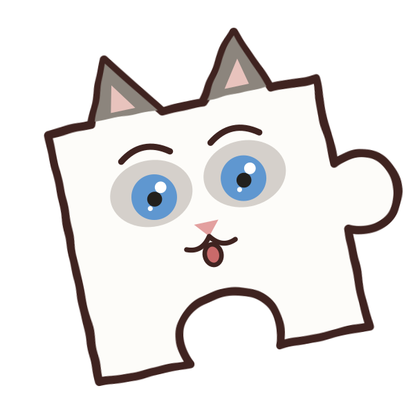
ほんとかな？ たしかめてみよっ！
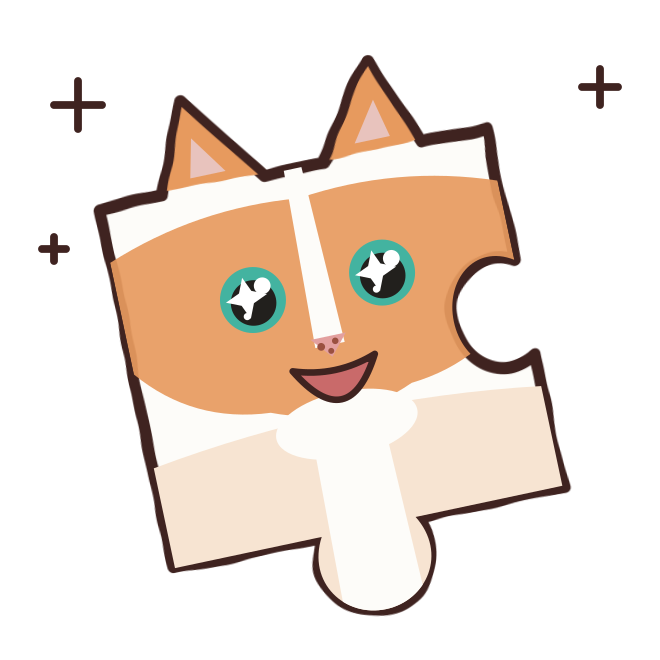
きょうの気分で、入口を選ぶ
選ぶと、合う入口が上のピースで光ります。
えっ、そういう意味だったの!? ってなるよ。覚えたて、使ってみよーっと！
縁側に集まった猫たちが、思い込みやすい言葉の謎を追いかけるアニメです。縦のショートは一分から三分。横長の回では、歴史の場面をじっくり描きます。
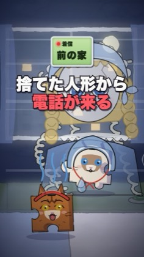
捨てた人形から電話が来る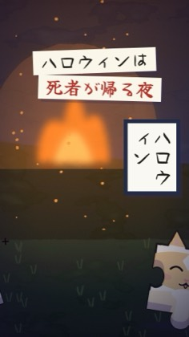
カボチャの灯りの、本当の名前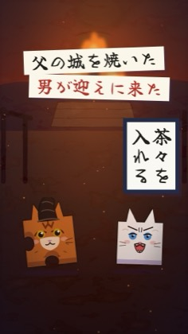
「茶々を入れる」は淀殿のこと？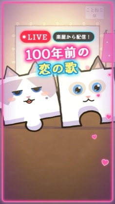
百年歌い継がれた「いのち短し」 横長の回夕日を止めた平清盛
横長の回夕日を止めた平清盛 横長の回本能寺の変、あの朝の四人
横長の回本能寺の変、あの朝の四人……夜に一話ずつ読むのが、いちばんいい。本で読んだとおりだ
平成が終わらないまま、平成三十八年を迎えた町、霧見町。中学校のオカルト研究会の猫たちが、町で起きる不思議な出来事を追い、その元になった言葉や言い伝えの本当の意味を確かめていきます。


ふふ、由来まで知ると、言葉ってもっとおもしろいでしょ
動画で取り上げた言葉の、由来と歴史を掘り下げる記事です。史料に書かれていることと、物語として語られてきたことを分けて、出典と一緒に読めます。
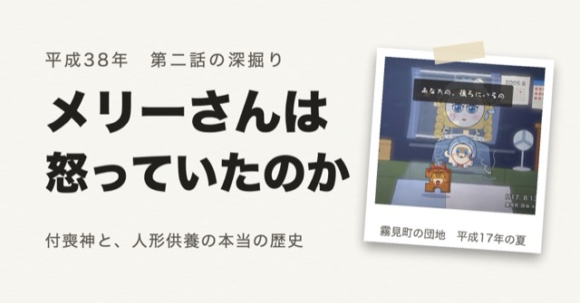
付喪神と人形供養の本当の歴史
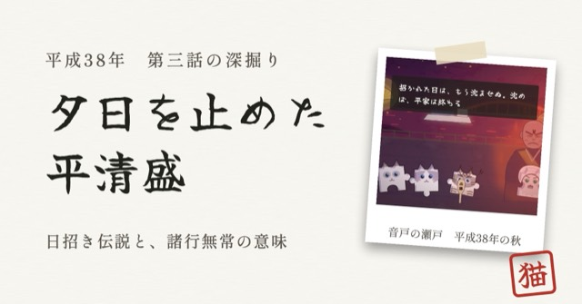
日招き伝説と『平家物語』の「諸行無常」
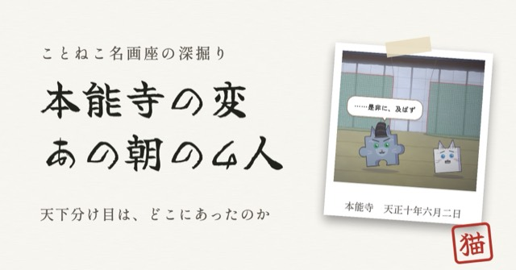
「天王山」の分かれ目は、本当に山崎だったのか
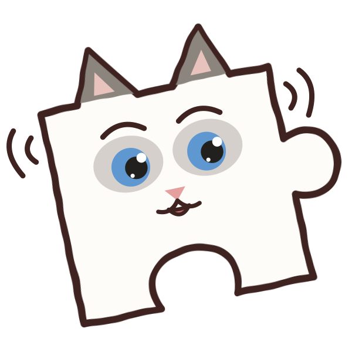
同じお話を、三つの入口でたどってみよっ！
答えは、ぴたっとひとつ！ 自分の手で組んで、確かめてみて
落ちてくる十六枚のピースを半紙にはめて、一枚の書を仕上げます。完成したら「本当の意味はどっち？」。先生の猫が、正しい意味に朱を入れます。
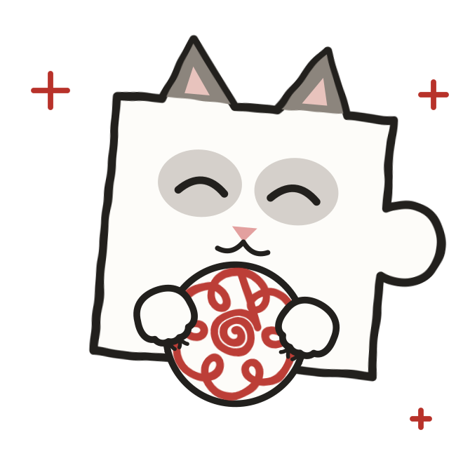
たとえば、この言葉 情けは人のためならず